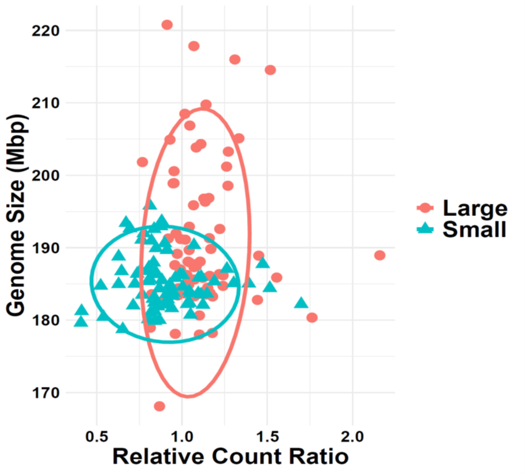
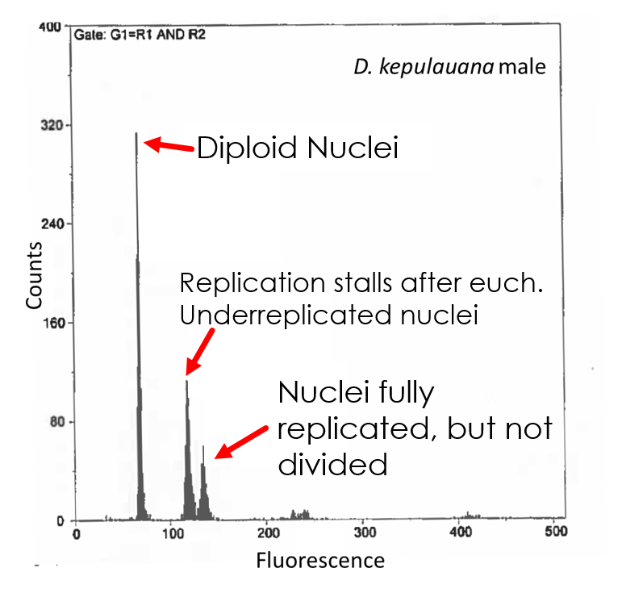
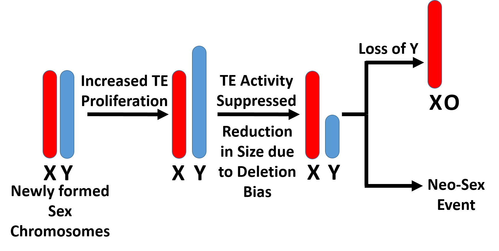
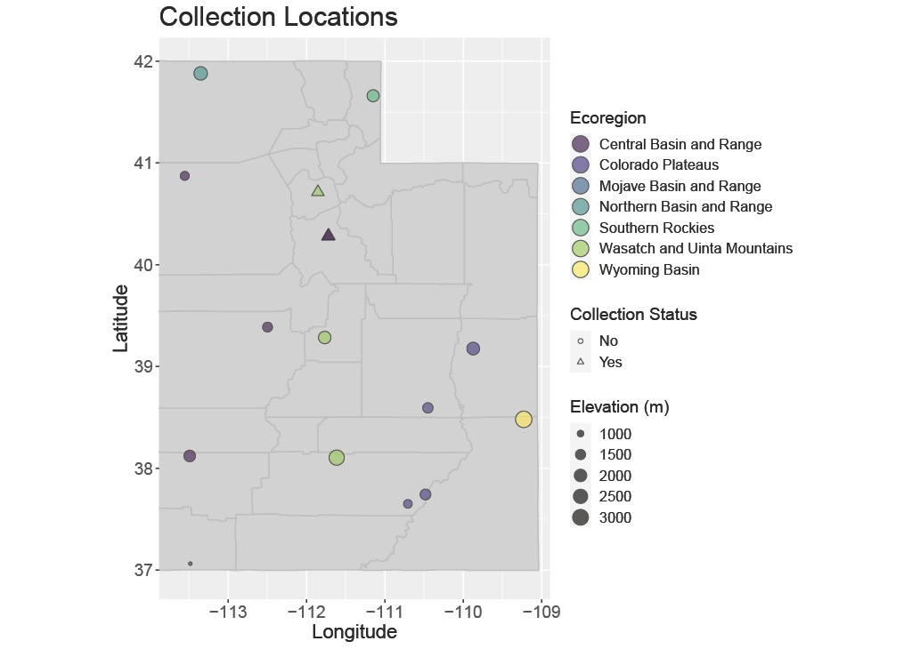

Research Interests
We use insects as models to address fundamental questions about how and why genomes change — in size, organization, and structure — across the tree of life.
Genome Size Evolution Across Species
Why do some grasshoppers carry 7× more DNA than humans? How does genome size vary across the insect tree of life?
Within-Species Genome Size Variation
Genome size, like any trait, varies within a species. What drives this variation and what are its phenotypic consequences?
Underreplication & Heterochromatin
Thoracic tissue in Drosophila stalls DNA replication before copying heterochromatin. What does this reveal about genome evolution?
Sex Chromosome Evolution
Y chromosomes shrink over evolutionary time. We use genome size differences between the sexes to track this process.
Forensic Entomology
Insects are essential tools in death investigations. We study the distributions and genomics of forensically relevant flies across Utah.
Genome Size Evolution Across Species
The amount of DNA in an organism's cells varies enormously across the tree of life — up to 7,000-fold in animals alone. This variation is not simply a reflection of organismal complexity: some grasshoppers carry roughly 6× more DNA than humans. Most of this variation is due to highly repetitive non-coding regions and transposable elements rather than differences in gene number.
Why does so much variation exist? How does it arise and spread? Are there consistent patterns of genome size change across lineages? I use flow cytometry-based genome size estimates combined with comparative phylogenetic approaches to investigate these patterns across a broad range of insects. While most of my work has focused on Drosophila species, I have also been part of collaborative efforts spanning multiple beetle families and other insects.
I am actively working to sequence individuals from species that show unusual or extreme patterns of genome size change, to identify the molecular mechanisms driving those shifts.
Key Questions
- What evolutionary forces drive large-scale changes in genome size across lineages?
- Are there consistent patterns of change within particular insect groups?
- Which mechanisms — transposable elements, deletions, polyploidy — dominate in different clades?
- Can extreme genome sizes be explained by adaptive hypotheses?

Key Publications
Useful Resources
Animal Genome Size Database Karyotype Database (Blackmon lab) Our Genome Size Estimation ServiceWithin-Species Genome Size Variation
While genome size variation between species is well documented, genome size — like any other quantitative trait — also varies within a species. In the Drosophila Genetic Reference Panel, the largest genomes contain roughly 30,000,000 more base pairs than the smallest. This within-species variation has been shown to correlate with reproductive fitness, body size, and developmental timing.
I have used long-running phenotype selection lines to examine genome size change over relatively short evolutionary timescales. I am actively investigating the evolutionary advantages (and disadvantages) of carrying more or less DNA — whether specific types of repetitive DNA assist in environmental adaptation, and how much intraspecific variation is expected before it contributes to divergence or speciation.
Key Questions
- What amount of within-species genome size variation is typical, and what drives it?
- Does carrying more or less DNA confer fitness advantages in particular environments?
- Does certain repetitive DNA assist in adaptation to new environments?
- At what point does intraspecific variation lead to reproductive isolation?

Key Publications
Useful Resources
Animal Genome Size Database NCBI GenBankUnderreplication & Heterochromatin Evolution
Underreplication is a fascinating phenomenon in which DNA replication stalls before copying the late-replicating heterochromatin. Long known in the polytene salivary glands of Drosophila, it was only recently documented in thoracic tissue. We showed — with the help of expert undergraduate dissectors — the specific thoracic tissues in which this stalling occurs, and I subsequently demonstrated underreplication in 132 species across the Drosophila genus.
Because genome size variation is largely due to repetitive and non-coding DNA in heterochromatic regions, underreplication offers a unique window into how heterochromatin and euchromatin evolve at different rates. We find dramatically different patterns of change between chromatin types across species. I hope to answer outstanding questions about this phenomenon through long-read sequencing, transcriptomics, and phenotypic studies.
Key Questions
- Why does partial replication occur specifically in thoracic tissue?
- Why has underreplication only been documented in Drosophila?
- Is there a physiological benefit to having more DNA in thoracic tissue?
- How do patterns of heterochromatin evolution differ between species?
- Is this dependent on which clade of species we examine?

Key Publications
Useful Resources
Our Flow Cytometry Service NCBI Sequence Read ArchiveSex Chromosome Evolution
Sex chromosomes are often the first biological structure invoked to explain differences between males and females. In XY systems, as sex chromosomes differentiate over evolutionary time, the Y chromosome loses gene content and becomes increasingly heterochromatized and compacted. We have found that in many Drosophila species, not only does gene content decrease — the physical amount of DNA on the Y chromosome shrinks as well.
Hypothetically, the Y chromosome shrinks progressively until it becomes so small that it can be lost entirely, potentially triggering sex chromosome turnover and the emergence of neo-sex chromosome systems. I use genome size differences between males and females (measured via flow cytometry) as a proxy for Y chromosome content, allowing rapid screening across many species to identify candidates for turnover events.
Beyond physical size, I am interested in what genetic content is found on neo-sex chromosomes, and whether specific chromosomes are more likely to be recruited as sex chromosomes. I am sequencing males and females from species that I have identified as having probable sex chromosome turnover events to investigate these questions directly.
Key Questions
- How large can the genomic size difference between sexes become?
- Are species with larger male genomes indicative of neo-sex chromosome evolution?
- Which chromosomes are preferentially recruited as new sex chromosomes?
- What content is present on neo-sex chromosomes at early stages of differentiation?
- How often do sex chromosome turnover events occur across insect lineages?

Key Publications
Useful Resources
Tree of Sex Database Karyotype Database (Blackmon lab) Heath Blackmon Lab (collaborator)Forensic Entomology
Forensic entomology is the application of insect biology to legal investigations. The most prominent application is in medico-legal death investigations, where insects colonizing remains can be used to estimate the time and circumstances of death. Underpinning this applied work is a foundation of basic biological knowledge: development, occurrence, geographic distribution, and the effects of environmental variables on insect biology.
Previous work in my lab has contributed to the transcriptomics of forensically relevant blow flies, including small RNA markers of developmental age and sex-identification approaches for immature specimens. Current efforts focus on documenting the distributions and occurrences of forensically relevant Diptera across the ecoregions of Utah, in collaboration with Dr. Lauren M. Weidner at Arizona State University. We are also developing genomic and bioinformatic pipelines for eDNA-based identification and detection of these important flies.
Key Questions
- Which forensically relevant Diptera species occur across Utah's diverse ecoregions?
- How do abiotic factors (elevation, temperature, habitat) affect species distributions?
- Can eDNA-based methods reliably detect and identify fly species in field samples?
- What molecular markers best distinguish species and age of immature specimens?

Key Publications
Useful Resources
Utah County Lines Map Tool NCBI GenBank Sandbox.bio — interactive bioinformatics